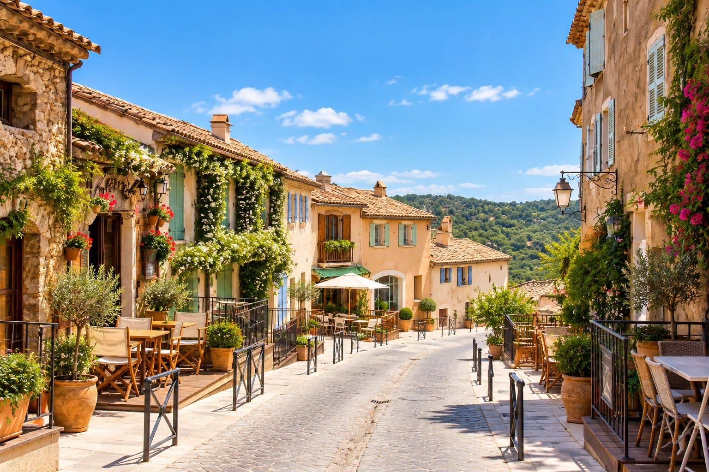

A short history
Ramatuelle village
A medieval hill village above Pampelonne, Ramatuelle has kept its stone lanes, shaded squares and village rhythm for centuries.
From the villa
10 minutes by car from the villa.What to enjoy
- Climbing the stone lanes to the old church square
- Shaded café terraces
- The Provençal market
- Galleries and ateliers
- Summer concerts at the open-air Théâtre de Verdure
- Vineyard walks
- The lighthouse at Cap Camarat